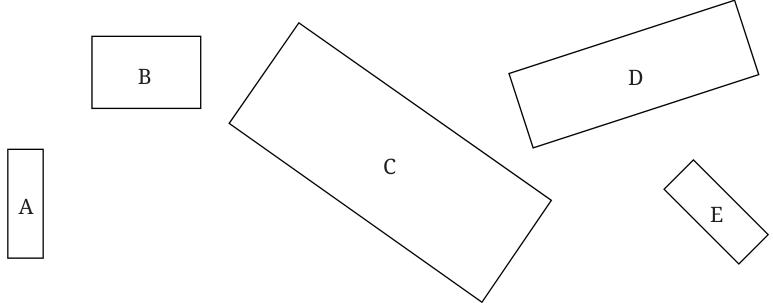
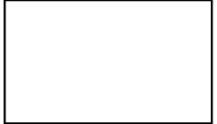
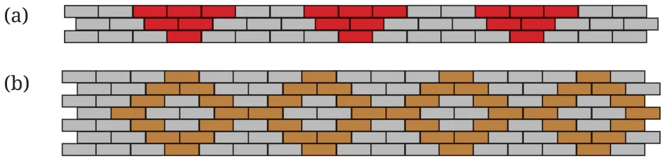

- 1.Circle the following statements of proportion that are true.
- (i)4 : 7 :: 12 : 21 (ii) 8 : 3 :: 24 : 6
- (iii)7 : 12 :: 12 : 7 (iv) 21 : 6 :: 35 : 10
- (v)12 : 18 :: 28 : 12 (vi) 24 : 8 :: 9 : 3
Ans. (i), (iv) and (vi) are true.
- 2.Give 3 ratios that are proportional to 4 : 9.
______ : ______ ______ : ______ ______ : ______
Ans. Given ratio is 4 : 9 3 ratios that are proportional of 4 : 9 are
\(\frac{4}{9} \frac{2}{2} 9 \frac{3}{3} \frac{4}{9} \frac{4}{4}\) Or, 8 : 18, 12 : 27 and 16 : 36 Try for more.
\(\times\) , \(4 \times\) and \(\times\)
- 3.Fill in the missing numbers for these ratios that are proportional
to 18 : 24. 3 : ______ 12 : ______ 20 : ______ 27 : ______
Ans.
- (i)3 : 4
- (ii)12 : 16
- (iii)20 : \(\frac{80}{3}\)
- (iv)27 : 36
- 4.Look at the following rectangles. Which rectangles are similar to
each other? You can verify this by measuring the width and height using a scale and comparing their ratios.

Ans. Rectangles are similar if the ratio of their corresponding sides is same. First measure length and width of each rectangle (A, B, C, D, E) using scale. Calculate the ratio of length and width of each rectangle. Compare the ratios. If ratios are same then the rectangles are similar.
- 5.Look at the following rectangle. Can you draw a smaller rectangle
and a bigger rectangle with the same width to height ratio in your notebooks? Compare your rectangles with your classmates’ drawings. Are all of them the same? If they are different from yours, can you think why? Are they wrong?

Ans. Yes, we shall draw smaller and bigger rectangles with the same width to height ratio. We know that rectangles are similar, if they have same shape but can be different in sizes. May be all of them are different in shape. They are different in shape but have same ratio means they satisfy the condition of the proportion. So they are not wrong.
- 6.The following figure shows a small portion of a long brick wall
with patterns made using coloured bricks. Each wall continues this pattern throughout the wall. What is the ratio of grey bricks to coloured bricks? Try to give the ratios in their simplest form.

Ans.
- (a)No. of grey bricks in a block of the pattern \(= 2 + 3 + 4 = 9\)
No. of coloured bricks in a block of the pattern \(= 3 + 2 + 1 = 6\) Ratio of grey bricks to coloured bricks in a block of the pattern
\(= 9\) : \(6 = 3\) : 2
- (b)No. of grey bricks in one block of pattern \(= 16\)
No. of coloured bricks in one block of pattern \(= 12\)
Ratio is 16 : \(12 = 4\) : 3
- 7.Let us draw some human figures. Measure your friend’s body - the
lengths of their head, torso, arms, and legs. Write the ratios as mentioned below -
head : torso ______ : ______ torso : arms ______ : ______ torso : legs ______ : ______
Now, draw a figure with head, torso, arms, and legs with equivalent ratios as above.
Ans. Try yourself.